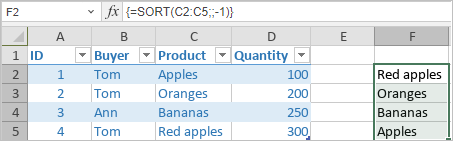

SORT funkcija
SORT funkcija je jedna od funkcija za pretraživanje i reference. Koristi se za sortiranje opsega podataka ili niza i vraća sortirani niz.
Sintaksa
SORT(array, [sort_index], [sort_order], [by_col])
SORT funkcija ima sledeće argumente:
| Argument | Opis |
|---|---|
| array | Opseg podataka koji želite da sortirate. |
| sort_index | Opcioni argument. Broj koji identifikuje kolonu ili red po kojem želite da sortirate. |
| sort_order | Opcioni argument. Broj koji određuje redosled sortiranja:
|
| by_col | Opcioni argument. Vrednost koja određuje pravac sortiranja:
|
Napomene
Napomena: ovo je formula niza. Za više informacija, pročitajte članak Umetanje formula niza.
Kako primeniti SORT funkciju.
Primeri
Slika ispod prikazuje rezultat koji vraća SORT funkcija.
